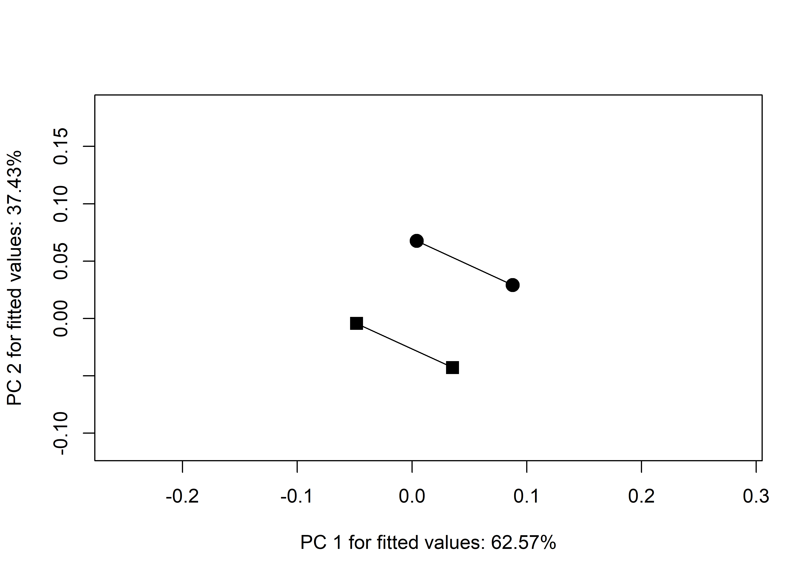

Chapter 3 Analysis of Caddo bottle morphology
3.1 Load packages + data
# load packages
# devtools::install_github("combmorphR/combmorph", ref = "Stable", build_vignettes = TRUE)
library(here)## here() starts at E:/github/bottle.traj/supplibrary(geomorph)## Loading required package: RRPP## Loading required package: rgllibrary(tidyverse)## -- Attaching packages ---------------------------------- tidyverse 1.3.0.9000 --## v ggplot2 3.3.3 v purrr 0.3.4
## v tibble 3.0.5 v dplyr 1.0.3
## v tidyr 1.1.2 v stringr 1.4.0
## v readr 1.4.0 v forcats 0.5.0## -- Conflicts ------------------------------------------ tidyverse_conflicts() --
## x dplyr::filter() masks stats::filter()
## x dplyr::lag() masks stats::lag()library(wesanderson)
# read GM data
source('readmulti.csv.R')
setwd("./data")
filelist <- list.files(pattern = ".csv")
coords <- readmulti.csv(filelist)
setwd("../")
# read qualitative data
qdata <- read.csv("qdata.csv",
header = TRUE,
row.names = 1)
qdata <- qdata[match(dimnames(coords)[[3]],
rownames(qdata)),]3.2 Generalized Procrustes Analysis
Landmark data were aligned to a global coordinate system (Kendall 1981, 1984; Slice 2001), achieved through generalized Procrustes superimposition (Rohlf and Slice 1990) performed in R 4.0.2 (R Core Development Team, 2020) using the geomorph library v. 3.3.1 (Adams et al. 2017; Adams and Otárola-Castillo 2013). Procrustes superimposition translates, scales, and rotates the coordinate data to allow for comparisons among objects (Gower 1975; Rohlf and Slice 1990). The gebmorph package uses a partial Procrustes superimposition that projects the aligned specimens into tangent space subsequent to alignment in preparation for the use of multivariate methods that assume linear space (Rohlf 1999; Slice 2001).
# gpa
Y.gpa <- gpagen(coords,
PrinAxes = TRUE,
ProcD = TRUE,
Proj = TRUE,
print.progress = FALSE)
# output + consensus configuration coords
Y.gpa##
## Call:
## gpagen(A = coords, PrinAxes = TRUE, ProcD = TRUE, Proj = TRUE,
## print.progress = FALSE)
##
##
##
## Generalized Procrustes Analysis
## with Partial Procrustes Superimposition
##
## 55 fixed landmarks
## 0 semilandmarks (sliders)
## 3-dimensional landmarks
## 3 GPA iterations to converge
##
##
## Consensus (mean) Configuration
##
## X Y Z
## 1 0.149592575 -0.0404136496 3.376743e-11
## 2 0.147173556 -0.0433294065 2.078575e-11
## 3 0.143228114 -0.0436208816 -3.652870e-11
## 4 0.139202716 -0.0431664492 9.636542e-11
## 5 0.135187749 -0.0425197852 1.746212e-11
## 6 0.131121013 -0.0419794150 1.110825e-10
## 7 0.118149545 -0.0420493318 -8.774955e-11
## 8 0.105127226 -0.0425534668 6.959090e-11
## 9 0.092105545 -0.0432281445 -1.421008e-10
## 10 0.079079683 -0.0439169782 -6.180405e-12
## 11 0.066050817 -0.0447258614 -5.852329e-11
## 12 0.053036489 -0.0456132394 -1.549673e-11
## 13 0.040067454 -0.0467629355 2.941337e-11
## 14 0.027187631 -0.0482817171 -6.661965e-11
## 15 0.014774856 -0.0511328972 4.239421e-11
## 16 -0.002442367 -0.0697821856 -9.948934e-12
## 17 -0.021347023 -0.0870573127 8.560266e-11
## 18 -0.042400767 -0.1018409566 -8.661503e-11
## 19 -0.065783793 -0.1126051278 1.261198e-10
## 20 -0.090944344 -0.1172556531 -6.943011e-11
## 21 -0.115868893 -0.1130778819 2.438475e-12
## 22 -0.138407078 -0.1015018873 5.450812e-11
## 23 -0.158006054 -0.0853362403 -4.068282e-11
## 24 -0.173543262 -0.0654022670 -4.546943e-12
## 25 -0.176305318 -0.0492750965 -3.854682e-11
## 26 -0.177398796 -0.0328527435 7.686695e-11
## 27 -0.178096213 -0.0163265421 -2.772348e-11
## 28 -0.178571261 0.0002311188 -6.109816e-11
## 29 -0.178817839 0.0161994119 4.571460e-11
## 30 -0.178738199 0.0321479284 -7.732769e-11
## 31 -0.178214449 0.0480519235 1.674289e-10
## 32 -0.175883287 0.0635986351 -5.592482e-11
## 33 -0.160436092 0.0840520852 -5.120841e-11
## 34 -0.140797036 0.1007514735 2.015435e-11
## 35 -0.117989218 0.1129159576 -3.756608e-11
## 36 -0.092554909 0.1172479091 2.510218e-11
## 37 -0.066951939 0.1126224201 8.980929e-11
## 38 -0.043073679 0.1020774076 2.352089e-11
## 39 -0.021536536 0.0872668121 3.041309e-11
## 40 -0.002192336 0.0698217212 6.154418e-11
## 41 0.015469413 0.0510477323 -1.826760e-10
## 42 0.027777878 0.0484841107 1.031692e-10
## 43 0.040459708 0.0469544499 -1.070487e-10
## 44 0.053223671 0.0458529683 -4.657318e-11
## 45 0.066017877 0.0448804469 3.769633e-11
## 46 0.078832293 0.0440790517 -3.903151e-11
## 47 0.091642626 0.0433474683 -7.627274e-11
## 48 0.104461812 0.0427514959 4.510071e-11
## 49 0.117284381 0.0423816032 -1.407974e-10
## 50 0.130073053 0.0423832242 -1.509403e-11
## 51 0.134170596 0.0429439752 1.523641e-10
## 52 0.138238771 0.0436231559 -5.333986e-11
## 53 0.142283643 0.0442573428 2.763077e-11
## 54 0.146318463 0.0442388364 5.114571e-11
## 55 0.148961537 0.0413973876 -1.254026e-11# combmorph data frame
gdf <- geomorph.data.frame(shape = Y.gpa$coords,
size = Y.gpa$Csize,
geo = qdata$geo,
time = qdata$time,
comb = qdata$comb)# render 3d gpa plot
#plot(Y.gpa)
# gpa plot
knitr::include_graphics('images/gpa3d.png')
(#fig:3d.gpa)Results of generalized Procrustes analysis.
# add centroid size to qdata
qdata$csz <- Y.gpa$Csize
# print updated qdata with centroid size
knitr::kable(qdata,
align = "lccccc",
caption = "Modified attributes included in qdata.")| site | type | geo | time | comb | csz | |
|---|---|---|---|---|---|---|
| 1054 | Belcher Mound | Taylor Engraved | north | Late-Historic | north, late historic | 221.1933 |
| 1073 | Belcher Mound | Belcher Engraved | north | Late-Historic | north, late historic | 396.8419 |
| 132 | Paul Mitchell | Hickory Fine Engraved | north | Formative-Early | north, formative early | 687.3149 |
| 142 | Allen Plantation | Hickory Fine Engraved | south | Formative-Early | south, formative early | 810.0585 |
| 152 | Smithport Landing | Smithport Plain | south | Formative-Early | south, formative early | 222.3931 |
| 157 | Smithport Landing | Hickory Fine Engraved | south | Formative-Early | south, formative early | 635.9682 |
| 16 | Pohler Coll | UID | north | Late-Historic | north, late historic | 718.4339 |
| 16sa37-121 | Eleven Ton Bridge | Wilder Engraved | south | Late-Historic | south, late historic | 305.4943 |
| 18 | Pohler Coll | Smithport Plain | north | Formative-Early | north, formative early | 624.6644 |
| 19-361 | George C Davis | Holly Fine Engraved | south | Formative-Early | south, formative early | 652.1150 |
| 19-4020 | George C Davis | Holly Fine Engraved | south | Formative-Early | south, formative early | 719.2440 |
| 2 | Mustang Creek Mound | Hickory Fine Engraved | north | Formative-Early | north, formative early | 715.1674 |
| 20 | Pohler Coll | Hickory Fine Engraved | north | Formative-Early | north, formative early | 487.5317 |
| 2007.18.02 | 41AN184 | UID | north | Late-Historic | north, late historic | 632.7158 |
| 2015-1 | George C Davis | Hickory Fine Engraved | south | Formative-Early | south, formative early | 425.1642 |
| 2097-1 | George C Davis | Holly Fine Engraved | south | Formative-Early | south, formative early | 593.4289 |
| 23 | Pohler Coll | Hickory Fine Engraved | north | Formative-Early | north, formative early | 669.7663 |
| 24 | Pohler Coll | UID | north | Late-Historic | north, late historic | 418.6807 |
| 256 | Belcher Mound | Taylor Engraved | north | Late-Historic | north, late historic | 458.8372 |
| 267 | Belcher Mound | Belcher Engraved | north | Late-Historic | north, late historic | 463.8621 |
| 269 | Belcher Mound | Belcher Engraved | north | Late-Historic | north, late historic | 557.5507 |
| 27 | Pohler Coll | Smithport Plain | north | Formative-Early | north, formative early | 639.5040 |
| 271 | Belcher Mound | Taylor Engraved | north | Late-Historic | north, late historic | 477.0324 |
| 29 | Pohler Coll | UID | north | Late-Historic | north, late historic | 625.1986 |
| 30 | Pohler Coll | Maxey Noded Redware | north | Formative-Early | north, formative early | 571.6977 |
| 31-1-79 | Poole | Maxey Noded Redware | north | Formative-Early | north, formative early | 571.5949 |
| 31 | Pohler Coll | UID | north | Late-Historic | north, late historic | 620.5723 |
| 317 | Belcher Mound | UID | north | Late-Historic | north, late historic | 686.0103 |
| 325 | Belcher Mound | Wilder Engraved | north | Late-Historic | north, late historic | 550.6656 |
| 340 | Belcher Mound | UID | north | Late-Historic | north, late historic | 620.1775 |
| 361 | Belcher Mound | Belcher Engraved | north | Late-Historic | north, late historic | 628.7876 |
| 363 | Belcher Mound | Belcher Engraved | north | Late-Historic | north, late historic | 585.9939 |
| 404 | Belcher Mound | Hickory Fine Engraved | north | Formative-Early | north, formative early | 504.5038 |
| 41sy25-2 | S. H. Latham | Wilder Engraved | south | Late-Historic | south, late historic | 413.9977 |
| 42 | Pohler Coll | UID | north | Late-Historic | north, late historic | 641.7042 |
| 427 | Paul Mitchell | Hickory Fine Engraved | north | Formative-Early | north, formative early | 609.9637 |
| 46 | Pohler Coll | UID | north | Late-Historic | north, late historic | 588.9848 |
| 464 | Paul Mitchell | Hickory Fine Engraved | north | Formative-Early | north, formative early | 476.9909 |
| 55-16-3 | Battle Mound | Haley Engraved | north | Formative-Early | north, formative early | 617.9615 |
| 55-16-39 | Battle Mound | Belcher Engraved | north | Late-Historic | north, late historic | 535.6979 |
| 6-6-609 | Hatchel | Belcher Engraved | north | Late-Historic | north, late historic | 459.0304 |
| 67 | Paul Mitchell | Smithport Plain | north | Formative-Early | north, formative early | 319.0530 |
| 7 | Frank Norris Farm | Hickory Fine Engraved | north | Formative-Early | north, formative early | 673.2136 |
| 775 | Belcher Mound | Belcher Engraved | north | Late-Historic | north, late historic | 502.9991 |
| 78 | Paul Mitchell | Smithport Plain | north | Formative-Early | north, formative early | 385.3598 |
| 784 | Belcher Mound | Keno Trailed | north | Late-Historic | north, late historic | 343.7336 |
| 787 | Belcher Mound | Taylor Engraved | north | Late-Historic | north, late historic | 528.2451 |
| 788 | Belcher Mound | Belcher Engraved | north | Late-Historic | north, late historic | 546.2135 |
| 8 | Crenshaw Mound | Hickory Fine Engraved | north | Formative-Early | north, formative early | 737.8038 |
| 803 | Belcher Mound | Belcher Engraved | north | Late-Historic | north, late historic | 433.7740 |
| 804 | Belcher Mound | Hodges Engraved | north | Late-Historic | north, late historic | 487.3065 |
| 805 | Belcher Mound | Belcher Engraved | north | Late-Historic | north, late historic | 458.4330 |
| 845 | Belcher Mound | Belcher Engraved | north | Late-Historic | north, late historic | 516.3754 |
| 852 | Belcher Mound | Keno Trailed | north | Late-Historic | north, late historic | 392.7014 |
| 897 | Belcher Mound | Belcher Engraved | north | Late-Historic | north, late historic | 667.6909 |
| 904 | Greer Farm | UID | south | Late-Historic | south, late historic | 454.3649 |
| 929 | Lawton Plantation | Keno Trailed | south | Late-Historic | south, late historic | 252.2038 |
| 95 | Smithport Landing | Smithport Plain | south | Formative-Early | south, formative early | 651.5567 |
| 955 | Gahagan Mound | Hickory Fine Engraved | south | Formative-Early | south, formative early | 696.8243 |
| 956 | Gahagan Mound | Hickory Fine Engraved | south | Formative-Early | south, formative early | 784.2710 |
| 96 | Smithport Landing | Hickory Fine Engraved | south | Formative-Early | south, formative early | 750.3802 |
| 979 | Belcher Mound | Hempstead Engraved | north | Late-Historic | north, late historic | 910.2240 |
| 997 | Belcher Mound | Belcher Engraved | north | Late-Historic | north, late historic | 617.3610 |
| B1V3 | Robert Griffin | UID | south | Late-Historic | south, late historic | 487.6034 |
| BELCH1 | Haley Place | Belcher Engraved | north | Late-Historic | north, late historic | 389.2537 |
| FIN-S18 | Vanderpool | UID | north | Late-Historic | north, late historic | 567.2520 |
| FIN-S3 | Vanderpool | Hume Engraved | north | Late-Historic | north, late historic | 359.3132 |
| FIN-S4 | Vanderpool | Poynor Engraved | north | Late-Historic | north, late historic | 486.6301 |
| FS7 | Hatchel | Hickory Fine Engraved | north | Formative-Early | north, formative early | 489.5597 |
| HBE1 | Haley Place | Belcher Engraved | north | Late-Historic | north, late historic | 389.2819 |
| HCN3 | Middlebrook Coll | UID | south | Late-Historic | south, late historic | 673.4124 |
| HE3 | Haley Place | Haley Engraved | north | Formative-Early | north, formative early | 643.6377 |
| HEB36 | Haley Place | Haley Engraved | north | Formative-Early | north, formative early | 540.5575 |
| HEB40 | Haley Place | Haley Engraved | north | Formative-Early | north, formative early | 582.1375 |
| HFE1 | Haley Place | Hickory Fine Engraved | north | Formative-Early | north, formative early | 783.8957 |
| HFE2 | Haley Place | Hickory Fine Engraved | north | Formative-Early | north, formative early | 617.2341 |
| HFE3 | Haley Place | Hickory Fine Engraved | north | Formative-Early | north, formative early | 454.2029 |
| HFE4 | Haley Place | Hickory Fine Engraved | north | Formative-Early | north, formative early | 543.2370 |
| HFE5 | Haley Place | Hickory Fine Engraved | north | Formative-Early | north, formative early | 435.9170 |
| MFB | Middlebrook Coll | UID | south | Late-Historic | south, late historic | 496.5131 |
| SMPRTPLN1 | Haley Place | Smithport Plain | north | Formative-Early | north, formative early | 676.8090 |
| SMPRTPLN2 | Haley Place | Smithport Plain | north | Formative-Early | north, formative early | 680.3718 |
| SMU16 | Bison B | Taylor Engraved | south | Late-Historic | south, late historic | 159.8901 |
| SMU34 | Bison B | Taylor Engraved | south | Late-Historic | south, late historic | 261.5380 |
| SMU67 | Bison B | Taylor Engraved | south | Late-Historic | south, late historic | 361.6921 |
| tyson | Tyson | Tyson Engraved | south | Late-Historic | south, late historic | 388.2290 |
| x16sa4-17 | Bison B | Wilder Engraved | south | Late-Historic | south, late historic | 603.9271 |
| x16sa4-2 | Bison B | Wilder Engraved | south | Late-Historic | south, late historic | 628.6545 |
| x16sa4-26 | Bison B | Wilder Engraved | south | Late-Historic | south, late historic | 440.6329 |
| x16sa4-65 | Bison B | Wilder Engraved | south | Late-Historic | south, late historic | 376.5012 |
3.3 Principal Components Analysis
Principal components analysis (Jolliffe 2002) was used to visualise shape variation among the bottles The shape changes described by each principal axis are commonly visualized using thin-plate spline warping of a reference 3D mesh (Klingenberg 2013; Sherratt et al. 2014).
# principal components analysis
pca<-gm.prcomp(Y.gpa$coords)
summary(pca)##
## Ordination type: Principal Component Analysis
## Centering by OLS mean
## Orthogonal projection of OLS residuals
## Number of observations: 90
## Number of vectors 90
##
## Importance of Components:
## Comp1 Comp2 Comp3 Comp4
## Eigenvalues 0.007727424 0.003767892 0.001500158 0.0006623962
## Proportion of Variance 0.526686170 0.256812198 0.102247855 0.0451476373
## Cumulative Proportion 0.526686170 0.783498368 0.885746223 0.9308938604
## Comp5 Comp6 Comp7 Comp8
## Eigenvalues 0.000367142 0.0001656131 0.0001325546 8.406388e-05
## Proportion of Variance 0.025023686 0.0112878689 0.0090346665 5.729630e-03
## Cumulative Proportion 0.955917546 0.9672054154 0.9762400819 9.819697e-01
## Comp9 Comp10 Comp11 Comp12
## Eigenvalues 6.166579e-05 4.078043e-05 3.865242e-05 2.732507e-05
## Proportion of Variance 4.203020e-03 2.779515e-03 2.634474e-03 1.862423e-03
## Cumulative Proportion 9.861727e-01 9.889522e-01 9.915867e-01 9.934491e-01
## Comp13 Comp14 Comp15 Comp16
## Eigenvalues 1.908075e-05 1.732952e-05 1.240785e-05 9.441025e-06
## Proportion of Variance 1.300507e-03 1.181146e-03 8.456951e-04 6.434819e-04
## Cumulative Proportion 9.947497e-01 9.959308e-01 9.967765e-01 9.974200e-01
## Comp17 Comp18 Comp19 Comp20
## Eigenvalues 6.335171e-06 4.873150e-06 4.255111e-06 3.565602e-06
## Proportion of Variance 4.317929e-04 3.321444e-04 2.900201e-04 2.430245e-04
## Cumulative Proportion 9.978518e-01 9.981839e-01 9.984739e-01 9.987170e-01
## Comp21 Comp22 Comp23 Comp24
## Eigenvalues 2.958931e-06 1.978918e-06 1.759837e-06 1.552129e-06
## Proportion of Variance 2.016750e-04 1.348792e-04 1.199471e-04 1.057901e-04
## Cumulative Proportion 9.989186e-01 9.990535e-01 9.991735e-01 9.992792e-01
## Comp25 Comp26 Comp27 Comp28
## Eigenvalues 1.105976e-06 1.057854e-06 9.390990e-07 9.241560e-07
## Proportion of Variance 7.538118e-05 7.210131e-05 6.400716e-05 6.298868e-05
## Cumulative Proportion 9.993546e-01 9.994267e-01 9.994907e-01 9.995537e-01
## Comp29 Comp30 Comp31 Comp32
## Eigenvalues 8.133820e-07 7.491749e-07 6.362130e-07 5.189917e-07
## Proportion of Variance 5.543854e-05 5.106230e-05 4.336304e-05 3.537347e-05
## Cumulative Proportion 9.996092e-01 9.996602e-01 9.997036e-01 9.997390e-01
## Comp33 Comp34 Comp35 Comp36
## Eigenvalues 4.742410e-07 3.835969e-07 3.337347e-07 2.801625e-07
## Proportion of Variance 3.232334e-05 2.614522e-05 2.274671e-05 1.909533e-05
## Cumulative Proportion 9.997713e-01 9.997974e-01 9.998202e-01 9.998393e-01
## Comp37 Comp38 Comp39 Comp40
## Eigenvalues 2.641057e-07 2.386650e-07 2.205112e-07 2.144277e-07
## Proportion of Variance 1.800093e-05 1.626694e-05 1.502961e-05 1.461497e-05
## Cumulative Proportion 9.998573e-01 9.998735e-01 9.998886e-01 9.999032e-01
## Comp41 Comp42 Comp43 Comp44
## Eigenvalues 1.668297e-07 1.453838e-07 1.301715e-07 1.225585e-07
## Proportion of Variance 1.137079e-05 9.909079e-06 8.872235e-06 8.353348e-06
## Cumulative Proportion 9.999146e-01 9.999245e-01 9.999333e-01 9.999417e-01
## Comp45 Comp46 Comp47 Comp48
## Eigenvalues 1.094421e-07 8.443486e-08 7.517973e-08 6.798263e-08
## Proportion of Variance 7.459358e-06 5.754916e-06 5.124104e-06 4.633564e-06
## Cumulative Proportion 9.999492e-01 9.999549e-01 9.999600e-01 9.999647e-01
## Comp49 Comp50 Comp51 Comp52
## Eigenvalues 5.834684e-08 5.181479e-08 4.600866e-08 3.944939e-08
## Proportion of Variance 3.976807e-06 3.531596e-06 3.135861e-06 2.688794e-06
## Cumulative Proportion 9.999686e-01 9.999722e-01 9.999753e-01 9.999780e-01
## Comp53 Comp54 Comp55 Comp56
## Eigenvalues 3.902217e-08 3.250223e-08 3.009312e-08 2.804007e-08
## Proportion of Variance 2.659675e-06 2.215289e-06 2.051089e-06 1.911157e-06
## Cumulative Proportion 9.999807e-01 9.999829e-01 9.999849e-01 9.999868e-01
## Comp57 Comp58 Comp59 Comp60
## Eigenvalues 2.190434e-08 2.002168e-08 1.867816e-08 1.590983e-08
## Proportion of Variance 1.492957e-06 1.364639e-06 1.273067e-06 1.084383e-06
## Cumulative Proportion 9.999883e-01 9.999897e-01 9.999910e-01 9.999920e-01
## Comp61 Comp62 Comp63 Comp64
## Eigenvalues 1.517659e-08 1.286271e-08 1.120483e-08 9.787570e-09
## Proportion of Variance 1.034407e-06 8.766971e-07 7.636994e-07 6.671018e-07
## Cumulative Proportion 9.999931e-01 9.999940e-01 9.999947e-01 9.999954e-01
## Comp65 Comp66 Comp67 Comp68
## Eigenvalues 9.140231e-09 7.409300e-09 7.078594e-09 6.181118e-09
## Proportion of Variance 6.229804e-07 5.050035e-07 4.824632e-07 4.212930e-07
## Cumulative Proportion 9.999960e-01 9.999965e-01 9.999970e-01 9.999974e-01
## Comp69 Comp70 Comp71 Comp72
## Eigenvalues 5.667797e-09 4.936287e-09 4.432583e-09 4.045657e-09
## Proportion of Variance 3.863060e-07 3.364477e-07 3.021163e-07 2.757441e-07
## Cumulative Proportion 9.999978e-01 9.999981e-01 9.999984e-01 9.999987e-01
## Comp73 Comp74 Comp75 Comp76
## Eigenvalues 3.573876e-09 2.918750e-09 2.330936e-09 2.186971e-09
## Proportion of Variance 2.435885e-07 1.989363e-07 1.588721e-07 1.490597e-07
## Cumulative Proportion 9.999990e-01 9.999992e-01 9.999993e-01 9.999995e-01
## Comp77 Comp78 Comp79 Comp80
## Eigenvalues 1.447103e-09 1.118947e-09 1.085838e-09 9.270563e-10
## Proportion of Variance 9.863170e-08 7.626524e-08 7.400863e-08 6.318636e-08
## Cumulative Proportion 9.999996e-01 9.999996e-01 9.999997e-01 9.999998e-01
## Comp81 Comp82 Comp83 Comp84
## Eigenvalues 7.646918e-10 6.189971e-10 5.272916e-10 4.210491e-10
## Proportion of Variance 5.211990e-08 4.218964e-08 3.593917e-08 2.869789e-08
## Cumulative Proportion 9.999998e-01 9.999999e-01 9.999999e-01 9.999999e-01
## Comp85 Comp86 Comp87 Comp88
## Eigenvalues 2.863834e-10 1.943241e-10 1.619655e-10 1.32995e-10
## Proportion of Variance 1.951934e-08 1.324476e-08 1.103925e-08 9.06468e-09
## Cumulative Proportion 1.000000e+00 1.000000e+00 1.000000e+00 1.00000e+00
## Comp89 Comp90
## Eigenvalues 2.219484e-11 6.073112e-34
## Proportion of Variance 1.512757e-09 4.139315e-32
## Cumulative Proportion 1.000000e+00 1.000000e+003.4 Define models
A residual randomization permutation procedure (RRPP; n = 10,000 permutations) was used for all Procrustes ANOVAs (Adams and Collyer 2015; Michael L. Collyer and Adams 2018), which has higher statistical power and a greater ability to identify patterns in the data should they be present (Anderson and Ter Braak 2003). To assess whether shape changes with size (allometry), and differs by group (region), Procrustes ANOVAs (Goodall 1991) were also run that enlist effect-sizes (zscores) computed as standard deviates of the generated sampling distributions (M. L. Collyer, Sekora, and Adams 2015).
3.4.1 Size and shape
# shape
fit.size <- procD.lm(size ~ geo * time,
data = gdf,
print.progress = FALSE,
iter = 9999)
# shape
fit.shape <- procD.lm(shape ~ geo * time,
data = gdf,
print.progress = FALSE,
iter = 9999)3.5 Test Hypothesis
Hypothesis: Formative/Early and Late/Historic Caddo bottles found north and south of the shape boundary express discrete patterns of shape change.
3.5.1 Boxplot
# attributes for boxplot
csz <- qdata$csz # centroid size
comb <- qdata$comb # comb + time
# boxplot of Caddo bottle centroid size by comb (north/south)
csz.comb <- ggplot(qdata, aes(x = comb, y = csz, color = comb)) +
geom_boxplot() +
geom_dotplot(binaxis = 'y', stackdir = 'center', dotsize = 0.3) +
scale_colour_manual(values = wes_palette("Moonrise2")) +
theme(legend.position = "none") +
labs(x = 'North/South + Formative/Early or Late/Historic?', y = 'Centroid Size')
# render plot
csz.comb## `stat_bindot()` using `bins = 30`. Pick better value with `binwidth`.
Figure 3.1: Boxplot of centroid size by .
3.5.2 Principal Components Analysis
# set plot parameters
pch.gps.comb <- c(15:18)[as.factor(comb)]
col.gps.comb <- wes_palette("Moonrise2")[as.factor(comb)]
col.hull <- c("#C27D38","#798E87","#CCC591","#29211F")
# plot pca by comb
pc.plot <- plot(pca,
asp = 1,
pch = pch.gps.comb,
col = col.gps.comb)
shapeHulls(pc.plot,
groups = comb,
group.cols = col.hull)3.5.3 Procrustes ANOVA
# ANOVA: do Caddo bottle shapes differ by comb?
anova(fit.size)##
## Analysis of Variance, using Residual Randomization
## Permutation procedure: Randomization of null model residuals
## Number of permutations: 10000
## Estimation method: Ordinary Least Squares
## Sums of Squares and Cross-products: Type I
## Effect sizes (Z) based on F distributions
##
## Df SS MS Rsq F Z Pr(>F)
## geo 1 30955 30955 0.01668 1.7818 0.93533 0.1829
## time 1 223796 223796 0.12056 12.8821 2.79675 0.0010 **
## geo:time 1 107547 107547 0.05794 6.1906 1.99903 0.0141 *
## Residuals 86 1494041 17373 0.80483
## Total 89 1856339
## ---
## Signif. codes: 0 '***' 0.001 '**' 0.01 '*' 0.05 '.' 0.1 ' ' 1
##
## Call: procD.lm(f1 = size ~ geo * time, iter = 9999, data = gdf, print.progress = FALSE)# ANOVA: do Caddo bottle shapes differ by comb?
anova(fit.shape)##
## Analysis of Variance, using Residual Randomization
## Permutation procedure: Randomization of null model residuals
## Number of permutations: 10000
## Estimation method: Ordinary Least Squares
## Sums of Squares and Cross-products: Type I
## Effect sizes (Z) based on F distributions
##
## Df SS MS Rsq F Z Pr(>F)
## geo 1 0.14475 0.144746 0.11085 13.3282 4.0550 1e-04 ***
## time 1 0.17047 0.170465 0.13055 15.6965 4.0846 1e-04 ***
## geo:time 1 0.05661 0.056609 0.04335 5.2126 2.6203 0.0034 **
## Residuals 86 0.93397 0.010860 0.71525
## Total 89 1.30579
## ---
## Signif. codes: 0 '***' 0.001 '**' 0.01 '*' 0.05 '.' 0.1 ' ' 1
##
## Call: procD.lm(f1 = shape ~ geo * time, iter = 9999, data = gdf, print.progress = FALSE)3.5.4 Mean Shapes
# subset landmark coordinates to produce mean shapes
new.coords<-coords.subset(A = Y.gpa$coords,
group = qdata$comb)
names(new.coords)## [1] "north, formative early" "north, late historic" "south, formative early"
## [4] "south, late historic"# group shape means
mean <- lapply(new.coords, mshape)
# plot mean shapes
plot(mean$`north, formative early`)
plot(mean$`north, late historic`)
plot(mean$`south, formative early`)
plot(mean$`south, late historic`)
# comparison plots
plotRefToTarget(mean$`north, formative early`,
mean$`north, late historic`,
method = "vector",
mag = 2)
plotRefToTarget(mean$`north, formative early`,
mean$`south, formative early`,
method = "vector",
mag = 2)
plotRefToTarget(mean$`north, formative early`,
mean$`south, late historic`,
method = "vector",
mag = 2)
plotRefToTarget(mean$`north, late historic`,
mean$`south, formative early`,
method = "vector",
mag = 2)
plotRefToTarget(mean$`north, late historic`,
mean$`south, late historic`,
method = "vector",
mag = 2)
plotRefToTarget(mean$`south, formative early`,
mean$`south, late historic`,
method = "vector",
mag = 2)
##knitr::include_graphics('images/mshape.jpg')3.6 Trajectory analysis
# phenotypic trajectory analysis::
TA <- trajectory.analysis(fit.shape,
groups = qdata$geo,
traj.pts = qdata$time,
print.progress = FALSE)
# magnitude difference
summary(TA, attribute = "MD")##
## Trajectory analysis
##
## 10000 permutations.
##
## Points projected onto trajectory PCs
##
## Trajectories:
## Trajectories hidden (use show.trajectories = TRUE to view)
##
## Observed path distances by group
##
## north south
## 0.06711036 0.15717388
##
## Pairwise absolute differences in path distances, plus statistics
## d UCL (95%) Z Pr > d
## north:south 0.09006353 0.06088912 2.360243 0.0026# plot
TP <- plot(TA,
pch = as.numeric(qdata$geo),
bg = as.numeric(qdata$time),
cex = 0.7,
col = "gray")
add.trajectories(TP, traj.pch = c(15, 17),
start.bg = 1,
end.bg = 2)
# end of code